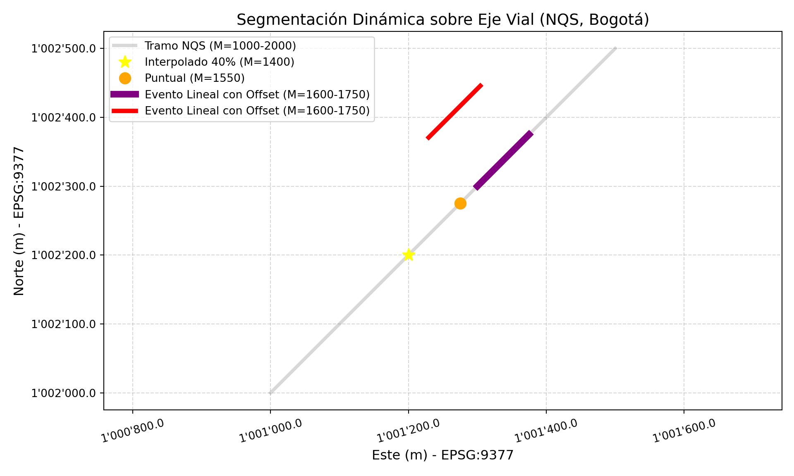
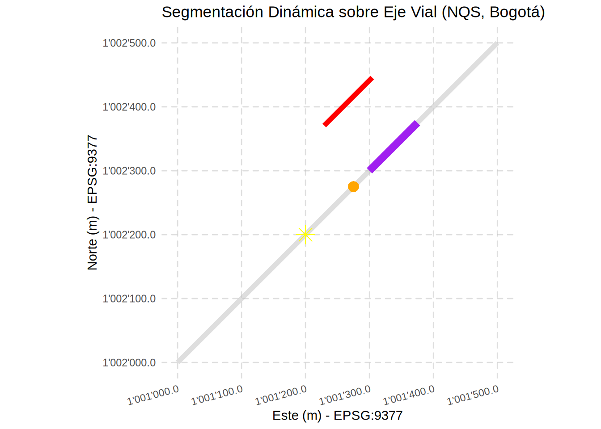

Código
# #| include: false
source("./docs/j_eval_j_plot.r")# #| include: false
source("./docs/j_eval_j_plot.r")Hasta este punto de nuestro recorrido en la ciencia de datos espaciales, hemos tratado a la Tierra como un plano de dos dimensiones. Todas nuestras primitivas geométricas (puntos, líneas y polígonos) se han construido utilizando exclusivamente pares de coordenadas Cartesianas \((X, Y)\) o geográficas (Longitud, Latitud). Si bien este enfoque bidimensional es suficiente para la cartografía tradicional y el catastro planimétrico, resulta limitado para modelar fenómenos complejos del mundo real.
La infraestructura vial, las redes de acueducto y la hidrología exigen herramientas más sofisticadas. ¿Cómo representamos la altitud de un pico montañoso? ¿Cómo registramos que un accidente de tránsito ocurrió exactamente en el “Kilómetro 15 + 200 metros” de una autopista, si nuestra línea solo tiene vértices cada 5 kilómetros?
Para resolver estos desafíos topográficos y logísticos, el estándar Simple Features contempla el uso de dimensiones adicionales integradas directamente en el vértice de la geometría. Este capítulo explora la inyección y manipulación de las cotas altimétricas (Eje Z) y los valores de medición continua (Eje M).
A lo largo de estas páginas, dominaremos el concepto de Referenciación Lineal (LRS) y la Segmentación Dinámica, técnicas críticas en la geomática aplicada que nos permitirán ubicar eventos (como baches, peajes o tramos de mantenimiento) a lo largo de redes complejas, y analizaremos cómo Python, R y Julia manejan —o restringen— la persistencia de estas cuartas dimensiones en la memoria del computador.
Aunque la mayoría de los análisis SIG se realizan en un plano bidimensional (XY), el estándar Simple Features permite integrar dimensiones adicionales para representar la complejidad del mundo real:
Esto genera cuatro combinaciones posibles: XY, XYZ, XYM y XYZM.
La Referenciación Lineal (LRS) es un método de localización que sitúa elementos geográficos basándose en su posición relativa a lo largo de un eje lineal medido, en lugar de depender exclusivamente de coordenadas cartesianas \((X, Y)\). Este paradigma es esencial en la gestión de infraestructuras (carreteras, tuberías) y redes hídricas, donde el concepto de Segmentación Dinámica permite asociar múltiples atributos a porciones de una vía sin necesidad de fragmentar físicamente la geometría base.
knitr::include_graphics("images/c14_plot_segmentacion_dinamica_julia.png")
En este modelo, la información se almacena a través de eventos: los eventos puntuales marcan hitos en una medida específica (ej. un bache en el km 15.2), mientras que los eventos lineales describen tramos definidos por una medida de inicio y una de fin (ej. un cambio de pavimento entre el km 20 y el km 45). Para que este sistema funcione, la geometría debe soportar una cuarta dimensión denominada eje \(M\) (Medida), que almacena el kilometraje acumulado independientemente de la longitud euclidiana del dibujo.
En el ecosistema de Python, la manipulación de dimensiones adicionales presenta una dualidad técnica. Por un lado, Shapely (la librería estándar) es sumamente eficiente para geometrías 2D y 3D (\(XYZ\)), pero carece de un eje \(M\) (Medida) nativo. Para suplir esto en análisis de Referenciación Lineal (LRS), es una práctica común “secuestrar” el eje \(Z\) para almacenar valores de medida o kilometraje.
Por otro lado, cuando se requiere un soporte estricto de cuatro dimensiones (\(XYZM\)), debemos recurrir a OGR (GDAL). OGR es un motor de bajo nivel que permite la persistencia de atributos escalares (Medida) vinculados directamente a la geometría, cumpliendo con el estándar ISO de Simple Features.
# =============================================================================
# MANEJO DE DIMENSIONES EN PYTHON: SHAPELY (3D) VS. OGR (4D)
# =============================================================================
from shapely.geometry import Point, LineString
from osgeo import ogr
# -----------------------------------------------------------------------------
# OPCIÓN A: Usando Shapely (Estándar para 2D y 3D / XYZ)
# -----------------------------------------------------------------------------
# 1. Creación de puntos con diferentes dimensiones
p_2d = Point(10, 20) # Plano XY
p_3d = Point(1001200.0, 1002300.0, 2560.0) # XYZ (Edificio 401 UNAL)
# 2. Inspección: Shapely usa el booleano 'has_z' para detectar la 3ra dimensión
print(f"Punto 2D: {p_2d} | ¿Tiene Z?: {p_2d.has_z}")Punto 2D: POINT (10 20) | ¿Tiene Z?: Falseprint(f"Punto 3D: {p_3d} | ¿Tiene Z?: {p_3d.has_z}")Punto 3D: POINT Z (1001200 1002300 2560) | ¿Tiene Z?: True# 3. Acceso: Si existe Z, se accede directamente como atributo
if p_3d.has_z:
print(f"Elevación extraída: {p_3d.z} msnm")Elevación extraída: 2560.0 msnm# 4. Segmentación Dinámica (Interpolación Lineal)
# NOTA: Usamos el eje Z como "M" (Medida) ya que Shapely no tiene eje M nativo.
# Tramo NQS: Km 1.0 (1000m) a Km 2.0 (2000m)
ruta_nqs = LineString([
(1001000, 1002000, 1000),
(1001500, 1002500, 2000)
])
# Ubicar un punto al 40% del recorrido (normalized=True para usar 0.0 a 1.0)
punto_interp = ruta_nqs.interpolate(0.4, normalized=True)
print(f"Posición al 40%: {punto_interp}")Posición al 40%: POINT Z (1001200 1002200 1400)print(f"Valor M (vía eje Z) interpolado: {punto_interp.z}") # Resultado: 1400.0Valor M (vía eje Z) interpolado: 1400.0# -----------------------------------------------------------------------------
# OPCIÓN B: OGR para 3D (El "puente" hacia el bajo nivel)
# -----------------------------------------------------------------------------
# wkbPoint25D es la constante de OGR para representar XYZ (2.5 dimensiones)
punto_3d_ogr = ogr.Geometry(ogr.wkbPoint25D)
punto_3d_ogr.AddPoint(1001200, 1002300, 2560)0# Ver la caja de memoria:
punto_3d_ogr<osgeo.ogr.Geometry; proxy of <Swig Object of type 'OGRGeometryShadow *' at 0x78f6c37bb300> ># Para ver el contenido:
print(punto_3d_ogr.ExportToWkt())POINT (1001200 1002300 2560)# Resultado: POINT (1001200 1002300 2560)
# O para extraer las coordenadas como una tupla:
print(punto_3d_ogr.GetPoint())(1001200.0, 1002300.0, 2560.0)# Resultado: (1001200.0, 1002300.0, 2560.0)
# -----------------------------------------------------------------------------
# OPCIÓN C: OGR para 4D (XYZM) - Carga desde WKT
# -----------------------------------------------------------------------------
# El estándar WKT ISO requiere el prefijo "ZM" para habilitar la 4ta dimensión
wkt_bogota = "POINT ZM (1001200 1002300 2560 10.5)"
punto_4d = ogr.CreateGeometryFromWkt(wkt_bogota)
print(f"\n--- Análisis XYZM (OGR) ---")
--- Análisis XYZM (OGR) ---print(f"Dimensión espacial (X,Y,Z): {punto_4d.GetCoordinateDimension()}")Dimensión espacial (X,Y,Z): 3print(f"¿Tiene medida M registrada?: {punto_4d.IsMeasured()}")¿Tiene medida M registrada?: 1# ExportToIsoWkt() es vital para ver 'ZM' en el texto de salida
print(f"WKT ISO (Formato Correcto): {punto_4d.ExportToIsoWkt()}")WKT ISO (Formato Correcto): POINT ZM (1001200 1002300 2560 10.5)# Extracción individual de componentes
print(f"Z (Altitud): {punto_4d.GetZ()} | M (Medida LRS): {punto_4d.GetM()}")Z (Altitud): 2560.0 | M (Medida LRS): 10.5# -----------------------------------------------------------------------------
# OPCIÓN D: La forma infalible para 4D en Python (WKT dinámico)
# -----------------------------------------------------------------------------
from osgeo import ogr
# En lugar de pelear con AddPoint, construimos la cadena de texto (WKT)
x, y, z, m = 1001200.0, 1002300.0, 2560.0, 10.5
wkt_dinamico = f"POINT ZM ({x} {y} {z} {m})"
# El motor de OGR parsea el ZM sin quejarse de los argumentos
otro_punto_4d = ogr.CreateGeometryFromWkt(wkt_dinamico)
# Verificación
print(f"WKT ISO: {otro_punto_4d.ExportToIsoWkt()}")WKT ISO: POINT ZM (1001200 1002300 2560 10.5)print(f"Tipo OGR detectado: {otro_punto_4d.GetGeometryName()}")Tipo OGR detectado: POINTprint(f"Z recuperada con éxito: {otro_punto_4d.GetZ()}")Z recuperada con éxito: 2560.0print(f"M recuperada con éxito: {otro_punto_4d.GetM()}")M recuperada con éxito: 10.5En la gestión vial, muchos eventos no ocurren sobre el eje central (p. ej., señales, andenes o fallas en berma). Para representar esto gráficamente, utilizamos el concepto de Offset. En Shapely, offset_curve genera una geometría paralela a una distancia determinada; un valor positivo desplaza la línea hacia la izquierda del sentido de digitalización, permitiendo separar visualmente los eventos del eje de referencia vial.
Para cumplir con los estándares cartográficos colombianos (IGAC), el siguiente código formatea los ejes utilizando la comilla (') como separador de miles y un punto para decimales, garantizando legibilidad en coordenadas de gran magnitud.
import matplotlib.pyplot as plt
import matplotlib.ticker as ticker
from shapely.geometry import Point, LineString
import numpy as np
# 1. Definición de la geometría base (Tramo NQS en Bogotá)
# Coordenadas en EPSG:9377. Se incluye la medida M (en el eje Z) de 1000m a 2000m.
coords_nqs = [(1001000, 1002000, 1000), (1001500, 1002500, 2000)]
ruta_nqs = LineString(coords_nqs)
# 2. Definición de parámetros para referenciación lineal
m_inicio, m_fin = 1000, 2000
rango_m = m_fin - m_inicio
# Evento A: Interpolación al 40% del recorrido (Abscisa M=1400)
# normalized=True permite usar una escala de 0 a 1 independientemente de la longitud real
punto_interp = ruta_nqs.interpolate(0.4, normalized=True)
# Evento B: Evento puntual específico en la abscisa K1+550 (M=1550)
# Se calcula la fracción relativa: (M_deseado - M_inicial) / Rango_total
frac_puntual = (1550 - m_inicio) / rango_m
punto_evento_puntual = ruta_nqs.interpolate(frac_puntual, normalized=True)
# Evento C: Evento lineal (segmento) entre K1+600 y K1+750
f_ini = (1600 - m_inicio) / rango_m
f_fin = (1750 - m_inicio) / rango_m
segmento_evento_lineal = LineString([
ruta_nqs.interpolate(f_ini, normalized=True),
ruta_nqs.interpolate(f_fin, normalized=True)
])
# Ejemplo: Desplazar el evento 100 unidades a la izquierda de la vía
#En Shapely 2.0+, se recomienda usar .offset_curve(distancia) ya que parallel_offset está siendo deprecado. Si la distancia es positiva, el offset es a la izquierda; si es negativa, a la derecha.
segmento_offset = segmento_evento_lineal.offset_curve(100)
# 3. Configuración de la visualización cartográfica
fig, ax = plt.subplots(figsize=(10, 6))
# Definición de formateador para etiquetas de coordenadas (Estilo IGAC: 1'000.000)
def format_coordenadas(x, pos):
return "{:,.1f}".format(x).replace(",", "'")
# Aplicación del formateador a los ejes X y Y
ax.xaxis.set_major_formatter(ticker.FuncFormatter(format_coordenadas))
ax.yaxis.set_major_formatter(ticker.FuncFormatter(format_coordenadas))
# Renderizado de la ruta base (Tramo NQS)
x_b, y_b = ruta_nqs.xy
ax.plot(x_b, y_b, color='grey', linewidth=3, alpha=0.3, label='Tramo NQS (M=1000-2000)')
# Renderizado de eventos puntuales con simbología diferenciada
ax.plot(punto_interp.x, punto_interp.y, '*', color='yellow', ms=12, label='Interpolado 40% (M=1400)')
ax.plot(punto_evento_puntual.x, punto_evento_puntual.y, 'o', color='orange', ms=10, label='Puntual (M=1550)')
# Renderizado del evento lineal con realce visual (Grosor aumentado)
x_l, y_l = segmento_evento_lineal.xy
ax.plot(x_l, y_l, color='purple', linewidth=6, label='Evento Lineal con Offset (M=1600-1750)')
# Renderizado del evento lineal con offset con realce
xo_l, yo_l = segmento_offset.xy
ax.plot(xo_l, yo_l, color='red', linewidth=4, label='Evento Lineal con Offset (M=1600-1750)')
# Ajustes de anotación y cuadrícula
ax.set_title('Segmentación Dinámica sobre Eje Vial (NQS, Bogotá)', fontsize=14)
ax.set_xlabel('Este (m) - EPSG:9377', fontsize=12)
ax.set_ylabel('Norte (m) - EPSG:9377', fontsize=12)
ax.legend(loc='upper left')
ax.grid(True, linestyle='--', alpha=0.5)
ax.axis('equal') # Garantiza que la escala sea 1:1(np.float64(1000975.0), np.float64(1001525.0), np.float64(1001975.0), np.float64(1002525.0))# Rotación de etiquetas para mejorar legibilidad
plt.xticks(rotation=15)(array([1000900., 1001000., 1001100., 1001200., 1001300., 1001400.,
1001500., 1001600.]), [Text(1000900.0, 0, "1'000'900.0"), Text(1001000.0, 0, "1'001'000.0"), Text(1001100.0, 0, "1'001'100.0"), Text(1001200.0, 0, "1'001'200.0"), Text(1001300.0, 0, "1'001'300.0"), Text(1001400.0, 0, "1'001'400.0"), Text(1001500.0, 0, "1'001'500.0"), Text(1001600.0, 0, "1'001'600.0")])plt.tight_layout()
plt.show()
En el ecosistema de R, la manipulación de dimensiones espaciales se centraliza de manera eficiente en el paquete sf (Simple Features). A diferencia de la dualidad en Python entre Shapely y OGR, sf integra nativamente las librerías base GDAL y GEOS. Esto significa que soporta de forma directa y unificada geometrías en 2D (\(XY\)), 3D (\(XYZ\) o \(XYM\)) y 4D (\(XYZM\)), alineándose estrictamente con el estándar ISO de Simple Features sin necesidad de recurrir a estructuras de bajo nivel externas.
# =============================================================================
# MANEJO DE DIMENSIONES EN R: PAQUETE SF (GDAL/GEOS NATIVO)
# =============================================================================
library(sf)Linking to GEOS 3.12.1, GDAL 3.8.4, PROJ 9.4.0; sf_use_s2() is TRUE# -----------------------------------------------------------------------------
# OPCIÓN A: Creación de geometrías 2D y 3D (sf nativo)
# -----------------------------------------------------------------------------
# 1. Creación de puntos con diferentes dimensiones
p_2d <- st_point(c(10, 20)) # Plano XY
p_3d <- st_point(c(1001200.0, 1002300.0, 2560.0), dim = "XYZ") # XYZ (Edificio 401 UNAL)
# 2. Inspección: sf reconoce la clase y dimensiones automáticamente
cat(sprintf("Clase 2D: %s | Dimensiones: %s\n", class(p_2d)[1], st_geometry_type(p_2d)))Clase 2D: XY | Dimensiones: POINTcat(sprintf("Clase 3D: %s | Dimensiones: %s\n", class(p_3d)[1], st_geometry_type(p_3d)))Clase 3D: XYZ | Dimensiones: POINT# Verificación de rango Z para confirmar la tercera dimensión
sfc_3d <- st_sfc(p_3d)
cat("Rango Z del punto 3D:\n")Rango Z del punto 3D:print(st_z_range(sfc_3d))zmin zmax
2560 2560 # 3. Acceso: Extracción de coordenadas mediante matriz
coords_3d <- st_coordinates(sfc_3d)
cat(sprintf("Elevación extraída: %f msnm\n", coords_3d[1, "Z"]))Elevación extraída: 2560.000000 msnm# 4. Segmentación dinámica (Interpolación lineal)
# Tramo NQS: Km 1.0 (1000m) a Km 2.0 (2000m)
# Usar la M en el lugar de la Z
matriz_nqs <- rbind(
c(1001000, 1002000, 1000),
c(1001500, 1002500, 2000)
)
ruta_nqs <- st_sfc(st_linestring(matriz_nqs), dim = "XYZ")
# st_line_sample ubica un punto dada una fracción (0.0 a 1.0)
# Se opera vectorialmente para extraer la ubicación 2D y se interpola Z (usada como M)
# Nota: Devuelve MULTIPOINT así sea solo un punto. Use st_cast para convertir a POINT
punto_interp_2d <- st_line_sample(ruta_nqs, sample = 0.4)
coords_interp <- st_coordinates(punto_interp_2d)
coords_interp X Y Z L1
[1,] 1001200 1002200 1400 1# Interpolación manual del atributo M (alojado en Z)
z_interp <- 1000 + (2000 - 1000) * 0.4
punto_interp_3d <- st_point(c(coords_interp[1,"X"], coords_interp[1,"Y"], z_interp), dim = "XYZ")
cat("\nPosición al 40% (XYZ):\n")
Posición al 40% (XYZ):print(punto_interp_3d)POINT Z (1001200 1002200 1400)cat(sprintf("Valor M (vía eje Z) interpolado: %f\n", z_interp)) # Resultado: 1400.0Valor M (vía eje Z) interpolado: 1400.000000# -----------------------------------------------------------------------------
# OPCIÓN B: Geometrías 4D (XYZM) - Integración vía WKT
# -----------------------------------------------------------------------------
# El estándar WKT ISO permite instanciar XYZM directamente, y sf lo parsea sin fricción
wkt_bogota <- "POINT ZM (1001200 1002300 2560 10.5)"
punto_4d <- st_as_sfc(wkt_bogota)
cat("\n--- Análisis XYZM (sf / GDAL) ---\n")
--- Análisis XYZM (sf / GDAL) ---cat(sprintf("Tipo de geometría detectada: %s\n", st_geometry_type(punto_4d, by_geometry = FALSE)))Tipo de geometría detectada: POINTcat(sprintf("Clase 3D + M: %s", class(punto_4d[[1]])[1]))Clase 3D + M: XYZM# Extracción de componentes individuales
coords_4d <- st_coordinates(punto_4d)
cat(sprintf("Z (Altitud): %f | M (Medida LRS): %f\n", coords_4d[1, "Z"], coords_4d[1, "M"]))Z (Altitud): 2560.000000 | M (Medida LRS): 10.500000# -----------------------------------------------------------------------------
# OPCIÓN C: WKT dinámico en R
# -----------------------------------------------------------------------------
# Construcción de la cadena de texto (WKT) programáticamente
x <- 1001200.0
y <- 1002300.0
z <- 2560.0
m <- 10.5
wkt_dinamico <- sprintf("POINT ZM (%f %f %f %f)", x, y, z, m)
otro_punto_4d <- st_as_sfc(wkt_dinamico)
# Verificación de salida WKT
cat(sprintf("\nWKT ISO: %s\n", st_as_text(otro_punto_4d)))
WKT ISO: POINT ZM (1001200 1002300 2560 10.5)coords_otro <- st_coordinates(otro_punto_4d)
cat(sprintf("Z recuperada con éxito: %f\n", coords_otro[1, "Z"]))Z recuperada con éxito: 2560.000000cat(sprintf("M recuperada con éxito: %f\n", coords_otro[1, "M"]))M recuperada con éxito: 10.500000En la gestión vial, diversos elementos no se ubican exactamente sobre el eje principal de la vía (p. ej., señalización vertical o paraderos). Para representar esto de manera adecuada en un entorno SIG, se implementa el concepto de Offset. En R, no hay una función bien definida para realizar ese desplazamiento a lo largo de la línea. Se hizo manualmente a partir de las coordenadas de la línea segmentada. Por convención topológica, un valor positivo genera un desplazamiento hacia la izquierda respecto al sentido de digitalización de la línea base.
Para cumplir con los estándares cartográficos colombianos (IGAC), el siguiente código formatea los ejes utilizando la función label_number del paquete scales, configurando la comilla (') como separador de miles y un punto para posiciones decimales, lo que previene errores de lectura en coordenadas planas.
library(sf)
library(ggplot2)
library(scales)
# 1. Definición de la geometría base (Tramo NQS en Bogotá)
# Coordenadas en EPSG:9377.
# En la posición de la Z ponemos la M
coords_nqs <- rbind(c(1001000, 1002000, 1000), c(1001500, 1002500, 2000))
ruta_nqs <- st_sfc(st_linestring(coords_nqs, dim = "XYZ"), crs = 9377)
# 2. Definición de parámetros para referenciación lineal
m_inicio <- 1000
m_fin <- 2000
rango_m <- m_fin - m_inicio
# Evento A: Interpolación al 40% del recorrido (Abscisa M=1400)
punto_interp <- st_line_sample(ruta_nqs, sample = 0.4)
# La interpolación no se realiza también en Z
punto_interpGeometry set for 1 feature
Geometry type: MULTIPOINT
Dimension: XYZ
Bounding box: xmin: 1001200 ymin: 1002200 xmax: 1001200 ymax: 1002200
z_range: zmin: 1400 zmax: 1400
Projected CRS: MAGNA-SIRGAS 2018 / Origen-NacionalMULTIPOINT Z ((1001200 1002200 1400))# Evento B: Evento puntual específico en la abscisa K1+550 (M=1550)
frac_puntual <- (1550 - m_inicio) / rango_m
punto_evento_puntual <- st_line_sample(ruta_nqs, sample = frac_puntual)
# Evento C: Evento lineal (segmento) entre K1+600 y K1+750
f_ini <- (1600 - m_inicio) / rango_m
f_fin <- (1750 - m_inicio) / rango_m
# Extracción de coordenadas base para interpolación exacta del subsegmento
c_ini <- st_coordinates(st_line_sample(ruta_nqs, sample = f_ini))
c_fin <- st_coordinates(st_line_sample(ruta_nqs, sample = f_fin))
segmento_evento_lineal <- st_sfc(st_linestring(rbind(c_ini, c_fin)), crs = 9377)
# Ejemplo: Desplazar el evento 100 unidades a la izquierda de la vía
# Aplicación de álgebra vectorial para calcular la ortogonal del segmento recto
dx <- c_fin[1, "X"] - c_ini[1, "X"]
dy <- c_fin[1, "Y"] - c_ini[1, "Y"]
norma <- sqrt(dx^2 + dy^2)
# Vector perpendicular unitario (rotación +90 grados para dirección izquierda)
ux <- -dy / norma
uy <- dx / norma
# Traslación escalar de 100 unidades sobre el vector normal
c_ini_off <- c(c_ini[1, "X"] + (100 * ux), c_ini[1, "Y"] + (100 * uy))
c_fin_off <- c(c_fin[1, "X"] + (100 * ux), c_fin[1, "Y"] + (100 * uy))
segmento_offset <- st_sfc(st_linestring(rbind(c_ini_off, c_fin_off)), crs = 9377)
# Convertir a formato tabular (data.frame espacial) para facilitar la ingesta en ggplot2
df_nqs <- st_sf(geometria = ruta_nqs, tipo = "Tramo NQS (M=1000-2000)")
df_interp <- st_sf(geometria = st_cast(punto_interp, "POINT"), tipo = "Interpolado 40% (M=1400)")
df_puntual <- st_sf(geometria = st_cast(punto_evento_puntual, "POINT"), tipo = "Puntual (M=1550)")
df_lineal <- st_sf(geometria = segmento_evento_lineal, tipo = "Evento Lineal (M=1600-1750)")
df_offset <- st_sf(geometria = segmento_offset, tipo = "Evento Lineal con Offset")
# 3. Configuración de la visualización cartográfica
ggplot() +
# Renderizado de la ruta base (Tramo NQS)
geom_sf(data = df_nqs, color = 'grey', linewidth = 2, alpha = 0.5) +
# Renderizado de eventos puntuales con simbología diferenciada
geom_sf(data = df_interp, color = 'yellow', size = 5, shape = 8) +
geom_sf(data = df_puntual, color = 'orange', size = 4, shape = 16) +
# Renderizado del evento lineal central y el desplazado
geom_sf(data = df_lineal, color = 'purple', linewidth = 3) +
geom_sf(data = df_offset, color = 'red', linewidth = 2) +
# Garantiza que la escala sea 1:1 en el sistema proyectado
coord_sf(datum = st_crs(9377)) +
# Aplicación del formateador a los ejes X y Y (Estilo IGAC: 1'000.000)
scale_x_continuous(labels = label_number(big.mark = "'", decimal.mark = ".", accuracy = 0.1)) +
scale_y_continuous(labels = label_number(big.mark = "'", decimal.mark = ".", accuracy = 0.1)) +
# Ajustes de anotación
labs(
title = "Segmentación Dinámica sobre Eje Vial (NQS, Bogotá)",
x = "Este (m) - EPSG:9377",
y = "Norte (m) - EPSG:9377"
) +
# Ajustes de cuadrícula y tema
theme_minimal() +
theme(
# Teto inclunado 15 grados, justificación Horizontal (alineado a la derecha)
axis.text.x = element_text(angle = 15, hjust = 1),
# Líneas a trazos con 50% de transparencia
panel.grid.major = element_line(linetype = "dashed", color = scales::alpha("gray", 0.5))
)
En el entorno de Julia, la manipulación de dimensiones espaciales y operaciones topológicas se fundamenta en envoltorios directos hacia las bibliotecas C/C++ subyacentes. El paquete ArchGDAL.jl centraliza el acceso al motor OGR, permitiendo la definición estricta de geometrías \(XYZM\).
Sin embargo, las librerías de geometría computacional como LibGEOS.jl descartan por defecto las cotas altimétricas (\(Z\)) y los atributos escalares (\(M\)) durante operaciones topológicas de referenciación lineal.
Para ejecutar una segmentación dinámica estricta sin pérdida de datos en el eje \(M\), es necesario implementar un algoritmo de álgebra vectorial directo sobre la matriz de vértices extraída de la geometría base, asegurando la retención de las cuatro dimensiones.
j_eval('
# =============================================================================
# MANEJO DE DIMENSIONES EN JULIA: ARCHGDAL Y LIBGEOS
# =============================================================================
import ArchGDAL as AG
import LibGEOS as LG
# -----------------------------------------------------------------------------
# OPCIÓN A: Creación e inspección de geometrías 2D y 3D
# -----------------------------------------------------------------------------
# 1. Creación de punto tridimensional (XYZ) y bidimensional (XY)
p_xy = AG.createpoint(10.0, 20.0)
p_xyz = AG.createpoint(10.0, 20.0, 500.0)
# 2. Inspección de dimensiones
# Se utiliza getcoorddim para verificar la estructura del vector instanciado
dim_xy = AG.getcoorddim(p_xy)
println("Dimensiones de coordenadas p_xy: $dim_xy")
dim_xyz = AG.getcoorddim(p_xyz)
println("Dimensiones de coordenadas p_xyz: $dim_xyz")
# 3. Acceso a valor altimétrico (Z)
println("p_xyz - Z: ", AG.getz(p_xyz, 0))
println("p_xy - Z: ", AG.getz(p_xy, 0)) # Retorna 0.0 por defecto al no existir cota
# 4. Extracción de coordenadas mediante estándar WKT
println("p_xyz - WKT: ", AG.toWKT(p_xyz))
println("p_xy - WKT: ", AG.toWKT(p_xy))
# -----------------------------------------------------------------------------
# OPCIÓN B: Segmentación dinámica con LibGEOS (Interpolación LRS 3D)
# -----------------------------------------------------------------------------
# Definición de la línea base en tres dimensiones (XYZ)
# Nota: Para propósitos de LRS bidimensional, el eje Z suele secuestrarse para almacenar la medida (M)
wkt_coords_nqs = "LINESTRING Z (1001000 1002000 1000, 1001250 1002200 2000)"
ruta_nqs = LG.readgeom(wkt_coords_nqs)
# Interpolación fraccional
# El motor GEOS calcula la longitud sobre el plano XY y ejecuta una interpolación lineal para el eje Z
punto_interp_norm = LG.interpolateNormalized(ruta_nqs, 0.4)
# Interpolación por distancia absoluta
# Se utiliza flotante estricto (1250.0) para mantener la estabilidad del tipado paramétrico en Julia
punto_distancia = LG.interpolate(ruta_nqs, 1250.0)
println("\n--- Interpolación dinámica 3D (LibGEOS) ---")
println("Punto 3D interpolado al 40%: ", LG.writegeom(punto_interp_norm))
println("Punto 3D a 1250m exactos: ", LG.writegeom(punto_distancia))
# -----------------------------------------------------------------------------
# OPCIÓN C: Segmentación dinámica (Interpolación Manual 3D)
# -----------------------------------------------------------------------------
# Segmentación dinámica calculada vía álgebra vectorial sin dependencias topológicas
# Tramo NQS: Km 1.0 (1000m) a Km 2.0 (2000m)
x1, y1, z1 = 1001000.0, 1002000.0, 1000.0
x2, y2, z2 = 1001500.0, 1002500.0, 2000.0
frac = 0.4
x_int = x1 + (x2 - x1) * frac
y_int = y1 + (y2 - y1) * frac
z_int = z1 + (z2 - z1) * frac # Uso del eje Z para almacenar la medida M transitoria
punto_interp_3d = AG.createpoint(x_int, y_int, z_int)
println("\n--- Interpolación Manual 3D ---")
println("Posición al 40% (XYZ): ", AG.toWKT(punto_interp_3d))
println("Valor M (vía eje Z) interpolado: ", z_int)
# -----------------------------------------------------------------------------
# OPCIÓN D: Geometrías 4D (XYZM) - Integración vía WKT
# -----------------------------------------------------------------------------
# El estándar OGR soporta 4 dimensiones nativas sin requerir extensiones adicionales
# Las variables comentadas ilustran la interpolación dinámica de cadenas WKT
# x, y, z, m = 1001200.0, 1002300.0, 2560.0, 10.5
# punto_4d_str = "POINT ZM ($x $y $z $m)"
wkt_bogota = "POINT ZM (1001200 1002300 2560 10.5)"
punto_4d = AG.fromWKT(wkt_bogota)
println("\n--- Análisis XYZM (ArchGDAL) ---")
println("¿Tiene coordenada Z registrada?: ", AG.is3d(punto_4d))
println("¿Tiene medida M registrada?: ", AG.ismeasured(punto_4d))
println("Z (Altitud): ", AG.getz(punto_4d, 0), " | M (Medida LRS): ", AG.getm(punto_4d, 0))
println("WKT ISO (Formato Correcto): ", AG.toWKT(punto_4d))
# -----------------------------------------------------------------------------
# OPCIÓN E: Segmentación dinámica estricta en 4D (LRS Algorítmico)
# -----------------------------------------------------------------------------
# Definición de la línea base compleja en cuatro dimensiones
# Formato WKT: X Y Z (msnm) M (Abscisado/Km)
wkt_ruta_4d = "LINESTRING ZM (1001000 1002000 2600 1000.0, 1001500 1002500 2550 2000.0)"
ruta_nqs_4d = AG.fromWKT(wkt_ruta_4d)
# Función algorítmica para interpolación cuatridimensional
# Esta arquitectura mantiene la integridad del eje M que se descarta en operaciones topológicas estándar
function interpole_xyzm(linea::AG.IGeometry, fraccion::Float64)
n_vertices = AG.ngeom(linea)
# Extracción de matriz de vértices [X, Y, Z, M]
coords = [
(AG.getx(linea, i-1), AG.gety(linea, i-1), AG.getz(linea, i-1), AG.getm(linea, i-1))
for i in 1:n_vertices
]
# Cálculo de distancias acumuladas en el plano euclidiano 2D
distancias = zeros(n_vertices)
for i in 2:n_vertices
dx = coords[i][1] - coords[i-1][1]
dy = coords[i][2] - coords[i-1][2]
distancias[i] = distancias[i-1] + sqrt(dx^2 + dy^2)
end
longitud_total = distancias[end]
dist_objetivo = longitud_total * fraccion
# Búsqueda del segmento topológico correspondiente
idx = findfirst(d -> d >= dist_objetivo, distancias)
if idx == 1
return AG.fromWKT("POINT ZM ($(coords[1][1]) $(coords[1][2]) $(coords[1][3]) $(coords[1][4]))")
end
# Parámetros del segmento interceptado
d_ini = distancias[idx-1]
d_fin = distancias[idx]
f_local = (dist_objetivo - d_ini) / (d_fin - d_ini)
# Interpolación vectorial para las cuatro dimensiones
p_ini = coords[idx-1]
p_fin = coords[idx]
x_int = p_ini[1] + (p_fin[1] - p_ini[1]) * f_local
y_int = p_ini[2] + (p_fin[2] - p_ini[2]) * f_local
z_int = p_ini[3] + (p_fin[3] - p_ini[3]) * f_local
m_int = p_ini[4] + (p_fin[4] - p_ini[4]) * f_local
# Ensamblaje forzando la firma ZM para persistencia OGR
return AG.fromWKT("POINT ZM ($x_int $y_int $z_int $m_int)")
end
# Ejecución de la muestra equivalente a st_line_sample reteniendo Z y M
punto_interp_4d = interpole_xyzm(ruta_nqs_4d, 0.4)
println("\n--- Interpolación dinámica 4D (40% del recorrido) ---")
println("Geometría instanciada: ", AG.toWKT(punto_interp_4d))
println("Medida interpolada (M): ", AG.getm(punto_interp_4d, 0))
# Resultado esperado para M: 1400.0
')Starting Julia ...julia> # =============================================================================
julia> # MANEJO DE DIMENSIONES EN JULIA: ARCHGDAL Y LIBGEOS
julia> # =============================================================================
julia> import ArchGDAL as AG
julia> import LibGEOS as LG
julia> # -----------------------------------------------------------------------------
julia> # OPCIÓN A: Creación e inspección de geometrías 2D y 3D
julia> # -----------------------------------------------------------------------------
julia> # 1. Creación de punto tridimensional (XYZ) y bidimensional (XY)
julia> p_xy = AG.createpoint(10.0, 20.0)
Geometry: POINT (10 20)
julia> p_xyz = AG.createpoint(10.0, 20.0, 500.0)
Geometry: POINT (10 20 500)
julia> # 2. Inspección de dimensiones
julia> # Se utiliza getcoorddim para verificar la estructura del vector instanciado
julia> dim_xy = AG.getcoorddim(p_xy)
2
julia> println("Dimensiones de coordenadas p_xy: $dim_xy")
Dimensiones de coordenadas p_xy: 2
julia> dim_xyz = AG.getcoorddim(p_xyz)
3
julia> println("Dimensiones de coordenadas p_xyz: $dim_xyz")
Dimensiones de coordenadas p_xyz: 3
julia> # 3. Acceso a valor altimétrico (Z)
julia> println("p_xyz - Z: ", AG.getz(p_xyz, 0))
p_xyz - Z: 500.0
julia> println("p_xy - Z: ", AG.getz(p_xy, 0)) # Retorna 0.0 por defecto al no existir cota
p_xy - Z: 0.0
julia> # 4. Extracción de coordenadas mediante estándar WKT
julia> println("p_xyz - WKT: ", AG.toWKT(p_xyz))
p_xyz - WKT: POINT (10 20 500)
julia> println("p_xy - WKT: ", AG.toWKT(p_xy))
p_xy - WKT: POINT (10 20)
julia> # -----------------------------------------------------------------------------
julia> # OPCIÓN B: Segmentación dinámica con LibGEOS (Interpolación LRS 3D)
julia> # -----------------------------------------------------------------------------
julia> # Definición de la línea base en tres dimensiones (XYZ)
julia> # Nota: Para propósitos de LRS bidimensional, el eje Z suele secuestrarse para almacenar la medida (M)
julia> wkt_coords_nqs = "LINESTRING Z (1001000 1002000 1000, 1001250 1002200 2000)"
"LINESTRING Z (1001000 1002000 1000, 1001250 1002200 2000)"
julia> ruta_nqs = LG.readgeom(wkt_coords_nqs)
LINESTRING Z (1001000 1002000 1000, 1001250 1002200 2000)
julia> # Interpolación fraccional
julia> # El motor GEOS calcula la longitud sobre el plano XY y ejecuta una interpolación lineal para el eje Z
julia> punto_interp_norm = LG.interpolateNormalized(ruta_nqs, 0.4)
POINT Z (1001100 1002080 1400)
julia> # Interpolación por distancia absoluta
julia> # Se utiliza flotante estricto (1250.0) para mantener la estabilidad del tipado paramétrico en Julia
julia> punto_distancia = LG.interpolate(ruta_nqs, 1250.0)
POINT Z (1001250 1002200 2000)
julia> println(" --- Interpolación dinámica 3D (LibGEOS) ---")
--- Interpolación dinámica 3D (LibGEOS) ---
julia> println("Punto 3D interpolado al 40%: ", LG.writegeom(punto_interp_norm))
Punto 3D interpolado al 40%: POINT Z (1001100 1002080 1400)
julia> println("Punto 3D a 1250m exactos: ", LG.writegeom(punto_distancia))
Punto 3D a 1250m exactos: POINT Z (1001250 1002200 2000)
julia> # -----------------------------------------------------------------------------
julia> # OPCIÓN C: Segmentación dinámica (Interpolación Manual 3D)
julia> # -----------------------------------------------------------------------------
julia> # Segmentación dinámica calculada vía álgebra vectorial sin dependencias topológicas
julia> # Tramo NQS: Km 1.0 (1000m) a Km 2.0 (2000m)
julia> x1, y1, z1 = 1001000.0, 1002000.0, 1000.0
(1.001e6, 1.002e6, 1000.0)
julia> x2, y2, z2 = 1001500.0, 1002500.0, 2000.0
(1.0015e6, 1.0025e6, 2000.0)
julia> frac = 0.4
0.4
julia> x_int = x1 + (x2 - x1) * frac
1.0012e6
julia> y_int = y1 + (y2 - y1) * frac
1.0022e6
julia> z_int = z1 + (z2 - z1) * frac # Uso del eje Z para almacenar la medida M transitoria
1400.0
julia> punto_interp_3d = AG.createpoint(x_int, y_int, z_int)
Geometry: POINT (1001200 1002200 1400)
julia> println(" --- Interpolación Manual 3D ---")
--- Interpolación Manual 3D ---
julia> println("Posición al 40% (XYZ): ", AG.toWKT(punto_interp_3d))
Posición al 40% (XYZ): POINT (1001200 1002200 1400)
julia> println("Valor M (vía eje Z) interpolado: ", z_int)
Valor M (vía eje Z) interpolado: 1400.0
julia> # -----------------------------------------------------------------------------
julia> # OPCIÓN D: Geometrías 4D (XYZM) - Integración vía WKT
julia> # -----------------------------------------------------------------------------
julia> # El estándar OGR soporta 4 dimensiones nativas sin requerir extensiones adicionales
julia> # Las variables comentadas ilustran la interpolación dinámica de cadenas WKT
julia> # x, y, z, m = 1001200.0, 1002300.0, 2560.0, 10.5
julia> # punto_4d_str = "POINT ZM ($x $y $z $m)"
julia> wkt_bogota = "POINT ZM (1001200 1002300 2560 10.5)"
"POINT ZM (1001200 1002300 2560 10.5)"
julia> punto_4d = AG.fromWKT(wkt_bogota)
Geometry: POINT (1001200 1002300 2560)
julia> println(" --- Análisis XYZM (ArchGDAL) ---")
--- Análisis XYZM (ArchGDAL) ---
julia> println("¿Tiene coordenada Z registrada?: ", AG.is3d(punto_4d))
¿Tiene coordenada Z registrada?: true
julia> println("¿Tiene medida M registrada?: ", AG.ismeasured(punto_4d))
¿Tiene medida M registrada?: true
julia> println("Z (Altitud): ", AG.getz(punto_4d, 0), " | M (Medida LRS): ", AG.getm(punto_4d, 0))
Z (Altitud): 2560.0 | M (Medida LRS): 10.5
julia> println("WKT ISO (Formato Correcto): ", AG.toWKT(punto_4d))
WKT ISO (Formato Correcto): POINT (1001200 1002300 2560)
julia> # -----------------------------------------------------------------------------
julia> # OPCIÓN E: Segmentación dinámica estricta en 4D (LRS Algorítmico)
julia> # -----------------------------------------------------------------------------
julia> # Definición de la línea base compleja en cuatro dimensiones
julia> # Formato WKT: X Y Z (msnm) M (Abscisado/Km)
julia> wkt_ruta_4d = "LINESTRING ZM (1001000 1002000 2600 1000.0, 1001500 1002500 2550 2000.0)"
"LINESTRING ZM (1001000 1002000 2600 1000.0, 1001500 1002500 2550 2000.0)"
julia> ruta_nqs_4d = AG.fromWKT(wkt_ruta_4d)
Geometry: LINESTRING (1001000 1002000 2600,1001500 1002500 2550)
julia> # Función algorítmica para interpolación cuatridimensional
julia> # Esta arquitectura mantiene la integridad del eje M que se descarta en operaciones topológicas estándar
julia> function interpole_xyzm(linea::AG.IGeometry, fraccion::Float64) n_vertices = AG.ngeom(linea) # Extracción de matriz de vértices [X, Y, Z, M] coords = [ (AG.getx(linea, i-1), AG.gety(linea, i-1), AG.getz(linea, i-1), AG.getm(linea, i-1)) for i in 1:n_vertices ] # Cálculo de distancias acumuladas en el plano euclidiano 2D distancias = zeros(n_vertices) for i in 2:n_vertices dx = coords[i][1] - coords[i-1][1] dy = coords[i][2] - coords[i-1][2] distancias[i] = distancias[i-1] + sqrt(dx^2 + dy^2) end longitud_total = distancias[end] dist_objetivo = longitud_total * fraccion # Búsqueda del segmento topológico correspondiente idx = findfirst(d -> d >= dist_objetivo, distancias) if idx == 1 return AG.fromWKT("POINT ZM ($(coords[1][1]) $(coords[1][2]) $(coords[1][3]) $(coords[1][4]))") end # Parámetros del segmento interceptado d_ini = distancias[idx-1] d_fin = distancias[idx] f_local = (dist_objetivo - d_ini) / (d_fin - d_ini) # Interpolación vectorial para las cuatro dimensiones p_ini = coords[idx-1] p_fin = coords[idx] x_int = p_ini[1] + (p_fin[1] - p_ini[1]) * f_local y_int = p_ini[2] + (p_fin[2] - p_ini[2]) * f_local z_int = p_ini[3] + (p_fin[3] - p_ini[3]) * f_local m_int = p_ini[4] + (p_fin[4] - p_ini[4]) * f_local # Ensamblaje forzando la firma ZM para persistencia OGR return AG.fromWKT("POINT ZM ($x_int $y_int $z_int $m_int)") end
interpole_xyzm (generic function with 1 method)
julia> # Ejecución de la muestra equivalente a st_line_sample reteniendo Z y M
julia> punto_interp_4d = interpole_xyzm(ruta_nqs_4d, 0.4)
Geometry: POINT (1001200 1002200 2580)
julia> println(" --- Interpolación dinámica 4D (40% del recorrido) ---")
--- Interpolación dinámica 4D (40% del recorrido) ---
julia> println("Geometría instanciada: ", AG.toWKT(punto_interp_4d))
Geometría instanciada: POINT (1001200 1002200 2580)
julia> println("Medida interpolada (M): ", AG.getm(punto_interp_4d, 0))
Medida interpolada (M): 1400.0
julia> # Resultado esperado para M: 1400.0
La implementación en Julia aborda el problema calculando la ortogonal al segmento de forma vectorial, garantizando la consistencia geométrica sin importar la versión de las dependencias externas.
La macro @sprintf de la biblioteca estándar, combinada con el reemplazo de caracteres, permite emular la convención cartográfica del IGAC directamente dentro de las funciones de formato de los ejes del paquete Plots.
j_eval(r"---(
using Printf
# 1. PARAMETRIZACIÓN DE LA GEOMETRÍA BASE
# Definición del tramo vial principal (Ej. NQS en Bogotá).
# Sistema de referencia proyectado (EPSG:9377) para garantizar unidades métricas precisas.
x1, y1, m_inicio = 1001000.0, 1002000.0, 1000.0
x2, y2, m_fin = 1001500.0, 1002500.0, 2000.0
rango_m = m_fin - m_inicio
# 2. REFERENCIACIÓN LINEAL ESPACIAL (LRS) Y EVENTOS
# Evento A: Interpolación analítica por fracción (40 perc del recorrido / Abscisa M=1400)
f_interp = 0.4
px_interp = x1 + (x2 - x1) * f_interp
py_interp = y1 + (y2 - y1) * f_interp
# Evento B: Evento puntual definido por abscisa absoluta (K1+550 o M=1550)
# Se calcula la fracción paramétrica respecto al rango total disponible
f_puntual = (1550.0 - m_inicio) / rango_m
px_puntual = x1 + (x2 - x1) * f_puntual
py_puntual = y1 + (y2 - y1) * f_puntual
# Evento C: Evento lineal (Subsegmento entre K1+600 y K1+750)
f_ini = (1600.0 - m_inicio) / rango_m
f_fin = (1750.0 - m_inicio) / rango_m
lx_ini = x1 + (x2 - x1) * f_ini
ly_ini = y1 + (y2 - y1) * f_ini
lx_fin = x1 + (x2 - x1) * f_fin
ly_fin = y1 + (y2 - y1) * f_fin
# 3. TRANSFORMACIÓN ESPACIAL: OFFSET LATERAL VECTORIAL
# Cálculo de la curva paralela (Offset) sin depender de librerías topológicas.
# Se requiere desplazar el segmento lineal 100 metros a la izquierda del sentido de la vía.
# 3.1. Extracción del vector director del segmento
dx = lx_fin - lx_ini
dy = ly_fin - ly_ini
norma = sqrt(dx^2 + dy^2)
# 3.2. Cálculo del vector normal unitario (Rotación ortogonal de +90 grados)
# Aplicación directa de matriz de rotación 2D sobre el vector (dx, dy): [-dy, dx]
ux = -dy / norma
uy = dx / norma
dist_offset = 100.0
# 3.3. Traslación espacial de los vértices mediante escalado del vector normal
ox_ini = lx_ini + (dist_offset * ux)
oy_ini = ly_ini + (dist_offset * uy)
ox_fin = lx_fin + (dist_offset * ux)
oy_fin = ly_fin + (dist_offset * uy)
)---")julia> using Printf
julia> # 1. PARAMETRIZACIÓN DE LA GEOMETRÍA BASE
julia> # Definición del tramo vial principal (Ej. NQS en Bogotá).
julia> # Sistema de referencia proyectado (EPSG:9377) para garantizar unidades métricas precisas.
julia> x1, y1, m_inicio = 1001000.0, 1002000.0, 1000.0
(1.001e6, 1.002e6, 1000.0)
julia> x2, y2, m_fin = 1001500.0, 1002500.0, 2000.0
(1.0015e6, 1.0025e6, 2000.0)
julia> rango_m = m_fin - m_inicio
1000.0
julia> # 2. REFERENCIACIÓN LINEAL ESPACIAL (LRS) Y EVENTOS
julia> # Evento A: Interpolación analítica por fracción (40 perc del recorrido / Abscisa M=1400)
julia> f_interp = 0.4
0.4
julia> px_interp = x1 + (x2 - x1) * f_interp
1.0012e6
julia> py_interp = y1 + (y2 - y1) * f_interp
1.0022e6
julia> # Evento B: Evento puntual definido por abscisa absoluta (K1+550 o M=1550)
julia> # Se calcula la fracción paramétrica respecto al rango total disponible
julia> f_puntual = (1550.0 - m_inicio) / rango_m
0.55
julia> px_puntual = x1 + (x2 - x1) * f_puntual
1.001275e6
julia> py_puntual = y1 + (y2 - y1) * f_puntual
1.002275e6
julia> # Evento C: Evento lineal (Subsegmento entre K1+600 y K1+750)
julia> f_ini = (1600.0 - m_inicio) / rango_m
0.6
julia> f_fin = (1750.0 - m_inicio) / rango_m
0.75
julia> lx_ini = x1 + (x2 - x1) * f_ini
1.0013e6
julia> ly_ini = y1 + (y2 - y1) * f_ini
1.0023e6
julia> lx_fin = x1 + (x2 - x1) * f_fin
1.001375e6
julia> ly_fin = y1 + (y2 - y1) * f_fin
1.002375e6
julia> # 3. TRANSFORMACIÓN ESPACIAL: OFFSET LATERAL VECTORIAL
julia> # Cálculo de la curva paralela (Offset) sin depender de librerías topológicas.
julia> # Se requiere desplazar el segmento lineal 100 metros a la izquierda del sentido de la vía.
julia> # 3.1. Extracción del vector director del segmento
julia> dx = lx_fin - lx_ini
75.0
julia> dy = ly_fin - ly_ini
75.0
julia> norma = sqrt(dx^2 + dy^2)
106.06601717798213
julia> # 3.2. Cálculo del vector normal unitario (Rotación ortogonal de +90 grados)
julia> # Aplicación directa de matriz de rotación 2D sobre el vector (dx, dy): [-dy, dx]
julia> ux = -dy / norma
-0.7071067811865475
julia> uy = dx / norma
0.7071067811865475
julia> dist_offset = 100.0
100.0
julia> # 3.3. Traslación espacial de los vértices mediante escalado del vector normal
julia> ox_ini = lx_ini + (dist_offset * ux)
1.0012292893218814e6
julia> oy_ini = ly_ini + (dist_offset * uy)
1.0023707106781186e6
julia> ox_fin = lx_fin + (dist_offset * ux)
1.0013042893218814e6
julia> oy_fin = ly_fin + (dist_offset * uy)
1.0024457106781186e6
j_eval(r"---(
using Plots
using Printf
# 4. RENDERIZADO CARTOGRÁFICO Y PARAMETRIZACIÓN DE ESTILOS
# Formateador numérico personalizado para cumplir con estándares cartográficos (IGAC)
# Inyecta el separador de miles definido por defecto y lo sustituye por la comilla superior
# Formateador numérico personalizado para cumplir con estándares cartográficos (IGAC)
function fmt_igac(val)
# 1. Formateo base a un decimal estricto
str_val = @sprintf("%.1f", val)
# 2. Inyección de comilla superior como separador de miles mediante regex
# Evalúa grupos de 3 dígitos anclados antes del punto decimal
# Dentro de j_eval usamos \\d en lugar de usar solo un slash
# Y tammbién escamamos la comilla simple
return replace(str_val, r"(?<=\d)(?=(\d{3})+\.)" => "'")
end
# 4.1. Inicialización del lienzo y ploteo de la vía principal
plt = Plots.plot(
[x1, x2], [y1, y2],
label="Tramo NQS (M=1000-2000)",
color=:gray, linewidth=6, alpha=0.3,
aspect_ratio=:equal, # Mantiene correspondencia 1:1 entre coordenadas planas
size=(900, 600)
)
# 4.2. Inserción de eventos puntuales
Plots.scatter!(plt, [px_interp], [py_interp], label="Interpolado 40% (M=1400)", color=:yellow, markersize=10, markerstrokewidth=1, shape=:star5)
Plots.scatter!(plt, [px_puntual], [py_puntual], label="Puntual (M=1550)", color=:orange, markersize=7)
# 4.3. Inserción de eventos lineales (Eje principal y Desplazamiento)
Plots.plot!(plt, [lx_ini, lx_fin], [ly_ini, ly_fin], label="Evento Lineal (M=1600-1750)", color=:purple, linewidth=6)
Plots.plot!(plt, [ox_ini, ox_fin], [oy_ini, oy_fin], label="Evento Lineal con Offset", color=:red, linewidth=4)
# 4.4. Configuración de elementos periféricos de diseño cartográfico
Plots.plot!(plt,
title="Segmentación Dinámica sobre Eje Vial (NQS, Bogotá)",
xlabel="Este (m) - EPSG:9377",
ylabel="Norte (m) - EPSG:9377",
xformatter=x->fmt_igac(x),
yformatter=y->fmt_igac(y),
xrotation=15,
grid=true, gridstyle=:dash, gridalpha=0.5,
legend=:topleft,
margin = 5 * Plots.mm # Evita error de parseo en versiones estrictas de Julia
)
Plots.savefig(plt, "images/c14_plot_segmentacion_dinamica_julia.png")
)---")julia> using Plots
julia> using Printf
julia> # 4. RENDERIZADO CARTOGRÁFICO Y PARAMETRIZACIÓN DE ESTILOS
julia> # Formateador numérico personalizado para cumplir con estándares cartográficos (IGAC)
julia> # Inyecta el separador de miles definido por defecto y lo sustituye por la comilla superior
julia> # Formateador numérico personalizado para cumplir con estándares cartográficos (IGAC)
julia> function fmt_igac(val) # 1. Formateo base a un decimal estricto str_val = @sprintf("%.1f", val) # 2. Inyección de comilla superior como separador de miles mediante regex # Evalúa grupos de 3 dígitos anclados antes del punto decimal # Dentro de j_eval usamos \\d en lugar de usar solo un slash # Y tammbién escamamos la comilla simple return replace(str_val, r"(?<=\d)(?=(\d{3})+\.)" => "'") end
fmt_igac (generic function with 1 method)
julia> # 4.1. Inicialización del lienzo y ploteo de la vía principal
julia> plt = Plots.plot( [x1, x2], [y1, y2], label="Tramo NQS (M=1000-2000)", color=:gray, linewidth=6, alpha=0.3, aspect_ratio=:equal, # Mantiene correspondencia 1:1 entre coordenadas planas size=(900, 600) )
julia> # 4.2. Inserción de eventos puntuales
julia> Plots.scatter!(plt, [px_interp], [py_interp], label="Interpolado 40% (M=1400)", color=:yellow, markersize=10, markerstrokewidth=1, shape=:star5)
julia> Plots.scatter!(plt, [px_puntual], [py_puntual], label="Puntual (M=1550)", color=:orange, markersize=7)
julia> # 4.3. Inserción de eventos lineales (Eje principal y Desplazamiento)
julia> Plots.plot!(plt, [lx_ini, lx_fin], [ly_ini, ly_fin], label="Evento Lineal (M=1600-1750)", color=:purple, linewidth=6)
julia> Plots.plot!(plt, [ox_ini, ox_fin], [oy_ini, oy_fin], label="Evento Lineal con Offset", color=:red, linewidth=4)
julia> # 4.4. Configuración de elementos periféricos de diseño cartográfico
julia> Plots.plot!(plt, title="Segmentación Dinámica sobre Eje Vial (NQS, Bogotá)", xlabel="Este (m) - EPSG:9377", ylabel="Norte (m) - EPSG:9377", xformatter=x->fmt_igac(x), yformatter=y->fmt_igac(y), xrotation=15, grid=true, gridstyle=:dash, gridalpha=0.5, legend=:topleft, margin = 5 * Plots.mm # Evita error de parseo en versiones estrictas de Julia )
julia> Plots.savefig(plt, "images/c14_plot_segmentacion_dinamica_julia.png")
"/home/rstudio/work/01_prog_sig/images/c14_plot_segmentacion_dinamica_julia.png"
# 6. Mostrar resultado
knitr::include_graphics("images/c14_plot_segmentacion_dinamica_julia.png")
La persistencia de geometrías complejas varía significativamente. Mientras R integra la cuarta dimensión de forma nativa mediante su ecosistema unificado, Python y Julia requieren utilizar directamente envolturas de bajo nivel (GDAL/OGR) para evitar la pérdida de atributos escalares.
| Operación técnica | Python (shapely / osgeo.ogr) 🐍 |
R (sf) 🔵 |
Julia (ArchGDAL / LibGEOS) 🟣 |
|---|---|---|---|
| Instanciación 3D (XYZ) | Point(x, y, z) |
st_point(c(x, y, z)) |
AG.createpoint(x, y, z) |
| Punto con ZM | Soporte limitado | st_point(c(x,y,z,m), dim="XYZM") |
Vía WKB avanzado |
| Instanciación 4D (XYZM) | ogr.CreateGeometryFromWkt("POINT ZM (X Y Z M)") |
st_as_sfc("POINT ZM (X Y Z M)") |
AG.fromWKT("POINT ZM (X Y Z M)") |
| Chequear si tiene Z | geom.has_z (Shapely)geom_ogr.CoordinateDimension() == 3 (OGR) |
st_zm(geom, what="Z") |
AG.getcoorddim(geom) >= 3 |
| Verificación de medida (M) | geom_ogr.IsMeasured() |
st_geometry_type(geom) |
AG.ismeasured(geom) |
| Extracción de cota (Z) | geom.z |
st_coordinates(geom)[, "Z"] |
AG.getz(geom, 0) |
| Extracción de medida (M) | geom_ogr.GetM() |
st_coordinates(geom)[, "M"] |
AG.getm(geom, 0) |
El cálculo de eventos sobre líneas requiere algoritmos de interpolación. Los motores difieren en la sintaxis para el manejo de distancias absolutas frente a distancias relativas (normalizadas).
| Operación técnica | Python (shapely) 🐍 |
R (sf) 🔵 |
Julia (LibGEOS / Vectores) 🟣 |
|---|---|---|---|
| Interpolación normalizada (Fracción) | geom.interpolate(0.4, normalized=True) |
st_line_sample(geom, sample = 0.4) |
LG.interpolateNormalized(geom, 0.4) |
| Interpolación absoluta (Distancia) | geom.interpolate(250.0) |
st_line_sample(geom, sample = dist/total) |
LG.interpolate(geom, 250.0) |
| Curva paralela (Offset lateral) | geom.offset_curve(100) |
Álgebra vectorial | Álgebra vectorial ortogonal[ox, oy] = [lx, ly] + (dist * [ux, uy]) |
| Cálculo de longitud LRS | geom.length |
st_length(geom) |
LG.geomLength(geom) |
La generación de gráficos espaciales a nivel de publicación requiere el formateo estricto de los ejes coordenados (estándar IGAC para Colombia) y el control de la correspondencia visual 1:1 para evitar deformaciones topológicas.
| Operación técnica | Python (matplotlib) 🐍 |
R (ggplot2) 🔵 |
Julia (Plots) 🟣 |
|---|---|---|---|
| Inicialización del lienzo cartográfico | fig, ax = plt.subplots(figsize=(10, 6)) |
ggplot() |
plt = Plots.plot(size=(900, 600)) |
| Renderizado de capa lineal | ax.plot(x, y, color='grey') |
geom_sf(data = df, color = 'grey') |
Plots.plot!(plt,x, y, color=:gray) |
| Renderizado de capa puntual | ax.plot(x, y, 'o', color='red') |
geom_sf(data = df, color = 'red') |
Plots.scatter!(plt,x, y, color=:red) |
| Relación de aspecto espacial (1:1) | ax.axis('equal') |
coord_sf(datum = st_crs(9377)) |
aspect_ratio=:equal |
| Inyección de separador de miles (IGAC) | ax.xaxis.set_major_formatter(ticker.FuncFormatter(fmt)) |
scale_x_continuous(labels = label_number(...)) |
xformatter = x -> fmt_igac(x) |
| Aplicación de opacidad (Alpha) | alpha=0.5 |
color = scales::alpha("gray", 0.5) |
alpha=0.5 |
En este capítulo hemos roto la barrera bidimensional de los SIG tradicionales, introduciendo la gestión de infraestructuras y redes mediante dimensiones espaciales extendidas y sistemas paramétricos.
Los hitos conceptuales y técnicos que debes dominar de esta sección son:
shapely en Python o LibGEOS en Julia operan principalmente en un espacio 3D, careciendo de un eje \(M\) explícito para operaciones LRS nativas. Como solución metodológica, es una práctica común de la industria alojar temporalmente las medidas de kilometraje en la cota de altitud (\(Z\)).POINT ZM) y envolturas directas al motor GDAL/OGR. En contraste, R (vía sf) destaca por manejar estas cuatro dimensiones de manera fluida y nativa.El dominio de estas técnicas te permitirá enfrentar proyectos de transporte, hidrología y routing a escala profesional, manteniendo la integridad espacial de las mediciones sin importar el lenguaje de programación que utilices como motor de cálculo.